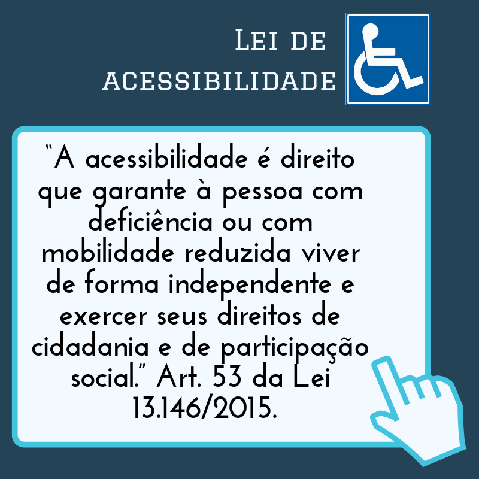

Leis de acessibilidade
A principal Lei de Acessibilidade no Brasil é a Lei Nº 10.098. Ela exige a acessibilidade para as pessoas com deficiência em todos os estabelecimentos, sejam eles espaços públicos ou empresas privadas, ambientes físicos ou digitais. Seu maior objetivo é garantir uma melhor qualidade de vida para essa parcela da população, com autonomia, segurança e livre de obstáculos. Não se preocupe, que logo em seguida falaremos um pouco mais sobre ela.
Existem muitas leis de acessibilidade, algumas são:
Lei nº 10.098
Lançada no ano 2000, ela foi a primeira totalmente voltada à acessibilidade. Ela é conhecida como a Lei da Acessibilidade e já trouxe a visão de quebrar barreiras no dia a dia, sejam elas urbanas, arquitetônicas, nos transportes ou na comunicação. Ela estabelece diretrizes e normas para que edificações, transporte, comunicação e outros elementos sejam projetados e adaptados de forma a permitir o acesso e a utilização por todas as pessoas. Assegurando assim, a autonomia das pessoas com deficiência e oportunidade para todas.
Lei nº 13.146
Lei nº 10.436
Promulgada em 24 de abril de 2002, a Lei nº 10.436 reconhece a Libras como uma língua no Brasil, sendo um meio legal de comunicação e expressão. Ela determina que o governo e todos os espaços públicos devem apoiar o seu uso e oferecer atendimento nesta língua para pessoas com deficiência auditiva. Além do que, não podemos nos esquecer de que o ensino de Libras também passou a ser obrigatório em cursos de formação de Educação Especial, Fonoaudiologia e Magistério.